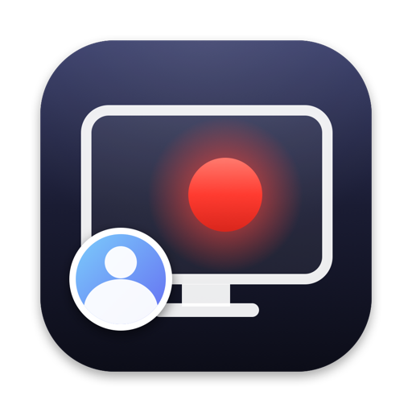

Camera overlay
A floating bubble you can drag anywhere, even mid-recording. Circle, rounded, square or wide. Scroll or pinch to resize.

Screen, camera, mic and system audio in one tidy MP4. A 1 MB menu-bar app for Mac.
macOS 15 or later · Apple Silicon
Try it: drag the camera, change its shape, hit record. The menu bar icon just turns red.
No account, no editor, no uploads. Hit a key, talk, hit it again, share the file.
A floating bubble you can drag anywhere, even mid-recording. Circle, rounded, square or wide. Scroll or pinch to resize.
Mic and system audio in one track. Apple's voice processing removes speaker bleed, and your music doesn't get ducked.
H.264 and AAC at 1080p, fast-start, so it plays instantly in Slack, WhatsApp and any browser.
Native Swift on ScreenCaptureKit and the hardware video encoder. About 1 MB, with no dependencies.
The menu bar icon just turns red. No timer, no banner, and the app's own menus never show up in your video.
No account, no cloud, no telemetry. Recordings go straight to your Pictures folder and stay there.
Grab ScreenRecz.zip and drag ScreenRecz.app into Applications.
The app isn't notarized, so macOS blocks the first launch. Click Open Anyway in System Settings > Privacy & Security, or run:
Grant Screen & System Audio Recording, Camera and Microphone when asked, then relaunch the app.
Press the shortcut from anywhere. Press it again to stop, and Finder shows your MP4.
Needs the Xcode Command Line Tools.